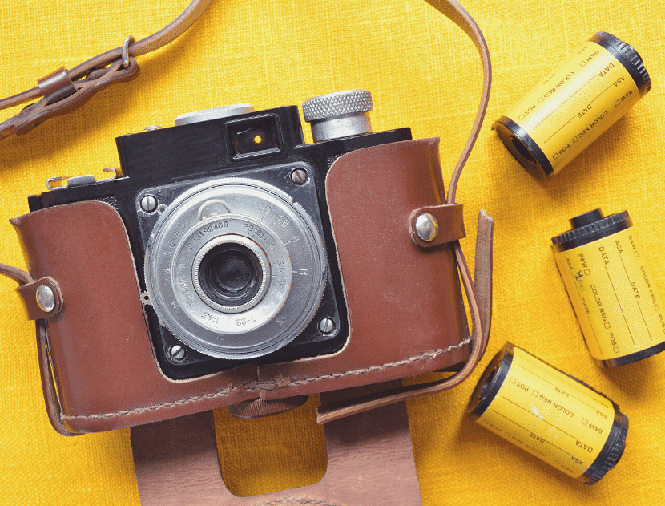

A fotózás története egészen a 9. századig nyúlik vissza, ahol iszlám tudósok felfedezték a camera obscurát, amit leginkább csillagászati célokra használtak. Rengeteg kísérletezés után 1816-ban Joseph Nicéphore Niepcenek sikerült camera obscura segítségével üveglapra kent fényérzékeny aszfaltra képet készítenie, amelyet azután lenolajjal lemosva tett láthatóvá. Egyik első fennmaradt képén, 1826-ból néhány háztető látható, amelyet 8 órás expozícióval sikerült rögzítenie. A camera obscura eljárás ma újra népszerű, az eszköz egyszerűen, akár egy dobozból is elkészíthető. Ezt követően Henry Talbot-nak, 1835-ben már csak 10 percre volt szüksége, hogy öklömnyi méretű kamerájával megörökítse a nappali ablakát.
Forrás: https://thebrightacademy.hu/fotozas-alapjai-hasznos-tippek-es-trukkok/
